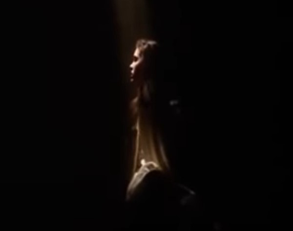

Olvido
Decidiste no confiar en Hoggle, por lo que te perdiste por las alcantarillas en medio de la oscuridad absoluta. Jareth se salió con las suyas, logró que perdieras la noción del tiempo y te olvidaras el motivo por el cual estabas en el laberinto.
